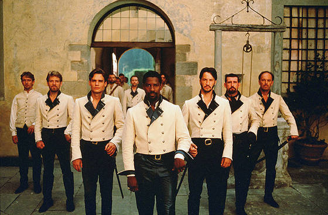

莎士比亚《无事生非》复习网页
Scene by scene summaries from Act 1 to Act 5. Each scene includes a brief comic style teaser. Later, you can replace these with actual illustrations, comics, or animations.
Leonato welcomes Don Pedro and his followers Benedick, Claudio, and his illegitimate brother Don John to his house. Beatrice and Benedick are quarrelling, but Claudio speaks of his love for Hero.
Leonato 欢迎 Don Pedro 和他的随从 Benedick、Claudio，以及他同父异母的弟弟 Don John 来到自己家中。Beatrice 和 Benedick 一见面就斗嘴争吵，而 Claudio 则表达了自己对 Hero 的爱意。

Leonato hears of Claudio’s interest in Hero, preparing the household for courtship and marriage expectations.
Don John, resentful and bitter, decides to sabotage Claudio’s happiness and begins planning with Borachio and Conrade.
At the masquerade ball, Don John tricks Claudio into thinking Don Pedro is wooing Hero for himself. The lie is corrected, and a prank is planned to make Beatrice and Benedick fall in love.
Don John and Borachio prepare the deception that will later ruin Hero’s wedding.
Benedick overhears a staged conversation and starts to believe that Beatrice is secretly in love with him.
Hero and Ursula stage a conversation so that Beatrice overhears claims that Benedick loves her.
Benedick begins changing under the influence of love, while Don John prepares Claudio and Don Pedro to misjudge Hero.
Dogberry leads the Watch with absurd confidence. Though comic and clumsy, they are close to uncovering the truth.
Hero prepares for her wedding, unaware of the public humiliation that is about to happen.
Dogberry tries to tell Leonato urgent news, but his muddled speech and terrible timing prevent immediate action.
Claudio publicly accuses Hero of unfaithfulness at the altar. Hero collapses. Friar Francis proposes pretending she is dead. Beatrice demands that Benedick prove his loyalty.
Dogberry’s Watch finally reveals Borachio’s confession and exposes Don John’s villainy.
Leonato and Antonio confront Claudio and Don Pedro. Benedick challenges Claudio, standing with Beatrice and justice.
In one of the play’s tender moments, Beatrice and Benedick admit their love, though still in their witty style.
Believing Hero dead, Claudio performs a public act of mourning and remorse.
Hero is revealed alive, the truth is restored, and the play ends with celebration and marriages.
Major character cards for revision. Later, you can add portraits, relationship lines, or pop-up quote windows.
Role: witty heroine
Brilliant, funny, independent, and emotionally courageous. Her wit is both shield and sword.
Role: witty hero
A comic bachelor who begins by mocking love, then grows into someone loyal, sincere, and transformed.
Role: young noblewoman
Gentle and quiet, but central to the play’s exploration of innocence, female reputation, and public shame.
Role: young soldier
Romantic but impulsive. His flaws reveal how honour, masculinity, and public judgment can become destructive.
Role: prince and matchmaker
Powerful and charming. He helps create the comedy, but also joins the false judgment against Hero.
Role: villain
Driven by resentment and alienation, Don John uses deception to ruin happiness and social harmony.
Role: comic constable
Absurd, confident, and linguistically chaotic. Accidentally one of the most important truth-finders in the play.
Role: governor of Messina
A paternal authority figure whose responses reflect the pressures of honour, reputation, and social expectation.
Main themes in the play, each with a short explanation and grouped key quotes for revision.
The play contrasts shallow romantic performance with tested, intelligent love. Claudio and Hero reflect conventional courtship, while Beatrice and Benedick build something deeper.
Masks, overheard scenes, false accusations, and staged performances drive the entire play. Shakespeare keeps asking whether what people see can ever be trusted.
Public reputation shapes how people behave and how they judge others. Hero’s treatment shows how brutally female honour can be policed.
The play explores obedience, chastity, masculine honour, and female constraint. Beatrice pushes hardest against the limits imposed on women.
Speech in this play is social power. Language can wound, entertain, disguise, reveal intelligence, or completely derail a wedding.
A study section with quiz questions and essay prompts. Later, you can add flashcards, sample paragraphs, or downloadable notes.